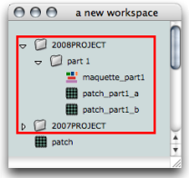
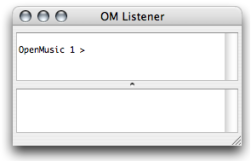

Workspace(s) Management
A workspace has two functions :
- It is a virtual desktop in which programs and other associated files are created and organized.
- It is also a "real" folder, where most programming material is created and stored.
The Workspace therefore both refers to a window in the OM environment, and to a folder located on the user's hard drive. The number of workspaces, their name and location is at the user's discretion : several workspaces can coexist on the same machine, but only one workspace can be open at a session .
This chapter provides information about the content of the workspace window and folder, and directions to manage one or several workspaces.
Organizing Workspaces
- Several workspaces can be kept on the same machine. Each of them represent a specific project and can possibly have a personalized environment : in the event of the crash or unexpected disappearing of a workspace, a user will "only" loose one project, and not a whole composer's life.
|  A workspace containing programs and storage folders. |
Workspace Window and Listener
If you open or create a workspace at the beginning of an OM session, you will be asked to select a directory in your hard disk. It is advised to choose the user's home directory , or one of its sub directories.
Mind selecting the Workspace folder itself and not one of its sub directories when opening a workspace. If you select a sub directory, OM will generate a new workspace out of it, which will disorganize your folders.
 | Once OM has been launched, the window of the selected workspace appears automatically with another window : the OM Listener . The Listener is a Lisp communication interface. With the workspace, it is a major element of the OM environment, so that both windows open automatically at the start of a session. |
Workspace Folder
The Workspace folder can contain a number of
sub folders
. These sub folders enclose the persistent documents[1] that are available for an OM session.
The elements displayed in the workspace window are actually stored in the Elements sub directory of the Workspace folder.
-
Elements: programs, that is patches[2] (.omp files) and maquette[3] (.omm files), folders to store programs. -
In and Out Files: additional files, such as audio, MIDI, SDIF and text files written or to be read by OM. -
Globals: global variables[4], that is, specific instances[5] that have been created in OM in order to be used subsequently in projects. -
Resources: material for the OM graphic interface, such as images and icons. -
User: programming tools created in OM by the user : classes[6] (.omc), functions[7] or methods[8] (both .ome). - Additional files : preferences.lisp and wsparams.lisp contain the workspace's preferences and parameters.
Modifying these folders can be extremely tricky and should never be done while OM is running.
- Persistent object/document, Persistence
A persistent object corresponds to a "real" file that is kept somewhere in the hard drive of the computer. Examples of persistent objects in OM are patches, maquettes, or global variables. The corresponding documents are kept in the Workspace folder. Conversely, a "non-persistent" object lays within a program but cannot be manipulated as an independent file.
- Patch
A programming unit where objects and functions – boxes – are interconnected to build a musical algorithm, that is, a sequence of instructions. A patch can also be embedded as a box within another patch.
- Maquette
A hybrid of visual program and sequencer, a programming unit provided with a time dimension, where musical material is organized in a time oriented structure.
- Global variable
An instance of OM object that has been saved in order to be used in other programs. Global variables are visible from the
Librarywindow and stored as .omi files in theGlobalsfolder of the workspace. - Instance
An actual object created at runtime, out of a given class. In OM, more specifically, an object created when evaluating a factory box. An instance can be saved as a global variable.
⤷
SHIFTclick on an outlet – especially the first outlet representing the self, the whole object – of a factory box to materialize an instance. - Class
A category of objects sharing common properties – characteristics and behaviour. A class specifies the internal structure and behaviour of an object. In OM, it is represented in a patch by a factory box that can produce an instance of a class.
See also : Object, Instance
- Function
A portion of code within a larger program, which performs a specific task. Operates upon 0 or more parameters and returns a value.
- Method
An elementary function or part of a generic function defining rules for its behaviour depending on a type of argument. Defining a generic function amounts to defining at least one method.
For instance, the OM+ function is made of four methods : 1. number + list / 2. list + number / 3. number + number / 4. list + list